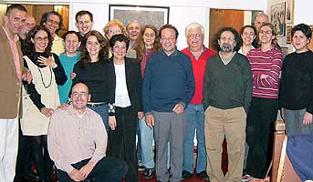

|
g e s Depuis sa fondation en 2001, le Groupe d'Études Sémiotiques de l'Université de São Paulo rassemble des enseignants-chercheurs et des étudiants de tous les niveaux autour de l'intérêt qu'ils partagent pour la sémiotique, envisagée dans une acception large comme théorie générale du sens et comme méthode d'analyse pratique des discours et des textes qui l'engendrent. La plupart de ses membres, travaillant dans le domaine des Lettres, développent leurs recherches à partir – surtout mais non pas exclusivement – des prémisses de l'Ecole sémiotique de Paris, fondée dans les années 1960 par le chercheur lituanien Algirdas Julien Greimas (1917 – 1992) et ses collaborateurs. Conscient de la vocation transversale de la sémiotique, le groupe encourage et accueille, par ailleurs, les contributions issues des différentes tendances qui composent aujourd'hui ce champ d'études hétéroclite et en pleine évolution.  |